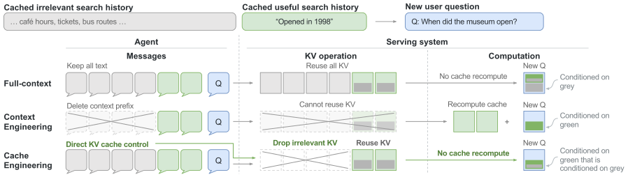
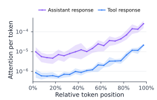
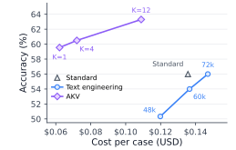
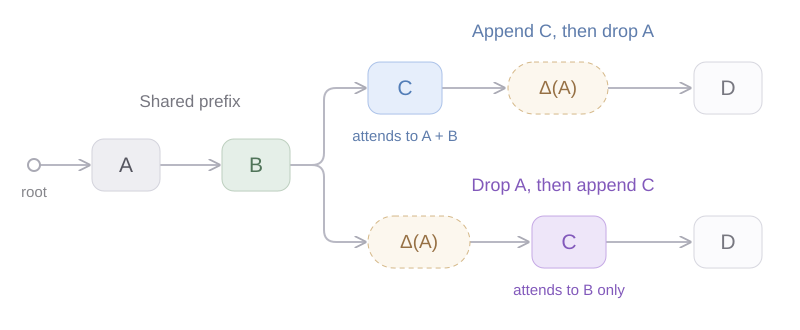
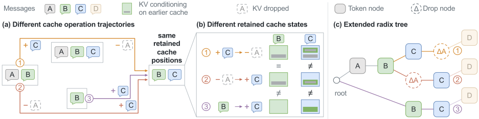
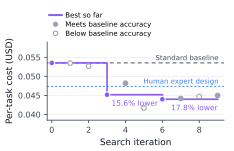

CONTEXT ENGINEERING
Edit the messages.
Changing an earlier prefix invalidates the cache that follows. Retained text must be processed again, while compact summaries can lose useful information.
Cache Engineering for Agents — direct control over active KV, powered by AKV serving.
Paper & code forthcoming
The core idea
Long agent histories make KV storage and reads expensive, and can exceed the context length at which a model performs reliably. Context engineering manages this growth by trimming or summarizing earlier messages.
CONTEXT ENGINEERING
Changing an earlier prefix invalidates the cache that follows. Retained text must be processed again, while compact summaries can lose useful information.
CACHE ENGINEERING
Keep the logical message history, drop selected KV entries, and reuse the retained states. Agents can reduce the cache without repeatedly recomputing the retained history.

In the paper’s GPT-OSS-120B experiment on BrowseComp-Plus, dropping text while retaining the latest 12 tool rounds costs 1.85× as much as full-context inference because the retained suffix must be recomputed. Direct KV control avoids this repeated prefill.


THREE CACHE OPERATIONS
Drop removes selected KV from future attention. The logical history stays intact, and the remaining states retain what they already computed—including information influenced by earlier history. No re-prefill of the retained states is needed.
Drop. Remove Tool A’s KV from future attention. Retained states and the logical history stay unchanged.
Append adds new input and generated tokens to the cache. Repos compacts the retained keys’ encoded positions; values and previously computed hidden states remain unchanged. Blocks are schematic message units.
The AKV serving system
A stateless interface gives agents control over the active cache. The server handles which states can be reused, which remain in memory, and how missing states are restored.
01 / STATELESS INTERFACE, STATEFUL SERVING
Send the full message history and specify which cache operations happen after which messages.
Match both histories, reuse compatible KV, and reconstruct missing states before continuing generation.
To continue a conversation, extend the message and operation histories. The client does not need to know which KV states are still resident on the server.
02 / DROP-AWARE RADIX TREE
Append C before dropping A, and C is computed with A available. Drop A first, and C is computed without directly attending to A. Both paths retain B and C, but their states differ. Token-prefix matching alone cannot tell them apart.
INSIDE THE CACHE
Share the common prefix. Branch when cache operations change the states that follow.

Δ(A) records where A is dropped. Before D, both paths retain B and C, but C has different KV states. B’s shared cache can still carry information from A.
The tree shares A and B, then branches at the drop operation. Each request reuses the B and C states consistent with its own history.
Schematic of two trajectories from the paper; nodes represent message blocks. The tree records both tokens and cache operations.

Logical dropping is separate from physical eviction. KV storage is freed only when no active computation or restoration needs it. Tree nodes remain, keeping cached descendants reachable.
AKV distinguishes encoded positions and records reposition markers. When needed, it copies and repositions a branch while preserving states shared with other requests.
Segment-batch attention groups queries by their historical visibility and positions, restoring missing states in one prefill pass rather than replaying every operation in a separate forward pass.
Benchmark results
A simple rolling-drop policy tests the value of cache engineering across three models and four benchmarks. AKV achieves the best average score and the lowest average cost for each evaluated model.
Accumulate history until it reaches 75% of the 128K context window, then summarize.
Apply the same summarization approach earlier to reduce the active context.
Keep the latest 12 tool responses’ KV and retain reasoning states, using a simple rolling-drop policy.
Table 1 · Three models, four benchmarks · Pass rate and API-equivalent inference cost per task
Scores are pass rates (%); costs are API-equivalent cents per task, based on active input and generated output lengths. Headline cost reduction is aggregated across the three models and four benchmarks.
Serving efficiency
How do task quality and serving efficiency translate into a GPU budget? In a separate 100-task SWE-bench Verified experiment, AKV reaches a higher final pass rate with fewer GPU hours.
A separate replay of the 80 SWE-bench tasks with the longest recorded contexts measures serving performance. At high concurrency, Standard’s cache pressure increases re-prefill work; AKV sustains output throughput with lower request latency.
Tokens / second · higher is better
Seconds · lower is better
At C=16, AKV reaches 369 output tokens/s versus 138 for Standard (2.67×), and 30.63 s P95 latency versus 229.90 s (7.51× speedup). These measurements come from the Top-80 replay, independently of Figure 9(a).
Eight A800-80GB GPUs serve GPT-OSS-120B in BF16: four for prefill and four for decode, each with tensor parallelism 4. Both baselines use SGLang; AKV extends SGLang with cache-operation support.
The same 80 tasks and ordering are used, selected by peak context length. Each method replays its own recorded policy trajectories, so turn counts and output budgets can differ. Tool responses are replayed; each turn generates its prescribed output length at temperature 0.
For AKV at C=14 and 16, measurement windows end after the first 30 task completions and include all requests within the window. High-concurrency Standard runs use a one-hour window, with some requests unfinished at cutoff. Supplemental tasks maintain concurrency. See the paper’s Appendix A.1.3–A.1.4 for the full setup.
TTFT is time to first token; TPOT is time per output token. Lower TPOT alone does not imply better serving performance when fewer requests are decoding and more are waiting for prefill.
Top-80 workload replay, versus Standard at C=16. Full concurrency results are available in the table above.
Cache policy · Recursive self-improvement
Rolling drop is a starting point. AKV’s cache interface also lets agents search, evaluate, and refine their own cache-engineering policies.
MiniMax-M2.7 recursively refines its cache policy on BrowseComp-Plus, reaching a 17.8% cost reduction relative to Standard at iteration 6 while maintaining Standard’s accuracy.
A separate policy-search experiment. The reduction is measured against its Standard baseline.

Team & resources
Author information, the paper, and implementation will be added with the project release.
Citation
Citation details will be added with the paper release.